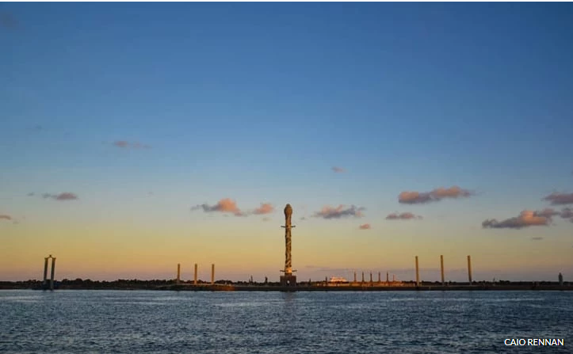
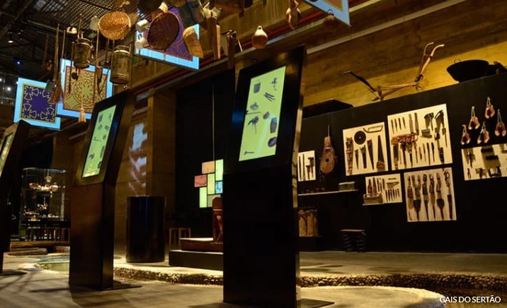

Conheça alguns pontos Túristicos do Recife Antigo
Parque das Esculturas Francisco Brennand
Ainda no Marco Zero, é dali que você parte para outro importante ponto: o Parque das Esculturas, uma instalação a céu aberto sobre o molhe do porto, composta por 90 obras do artista plástico Francisco Brennand, inaugurada em comemoração aos 500 anos do Descobrimento do Brasil. Dentre as esculturas, o destaque vai para a imponente Coluna de Cristal, que não passa despercebida com seus 32 metros de altura.
Cais do Sertão
A poucos metros do Marco Zero está o Cais do Sertão, que ocupa um belo prédio que antes servia de armazém para o porto. O museu abriga uma exposição permanente e interativa sobre o sertão brasileiro, conduzindo sua narrativa através da vida e obra do cantor pernambucano Luiz Gonzaga, o Rei do Baião..